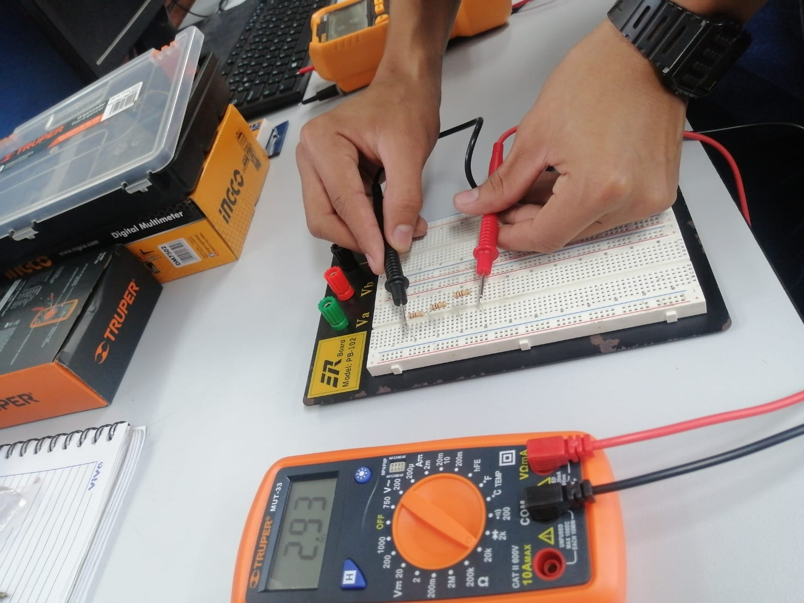
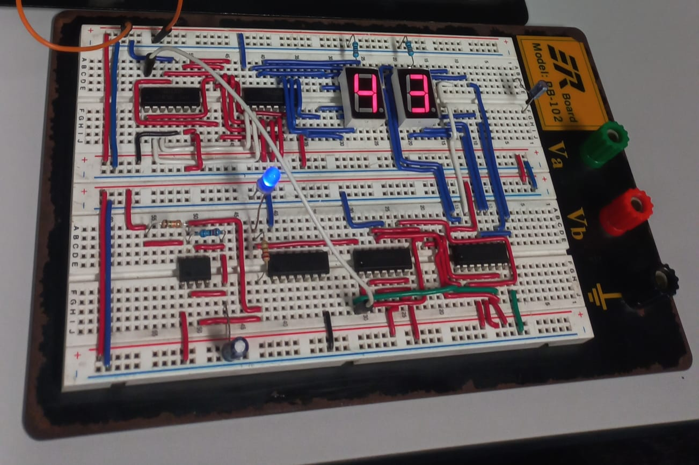
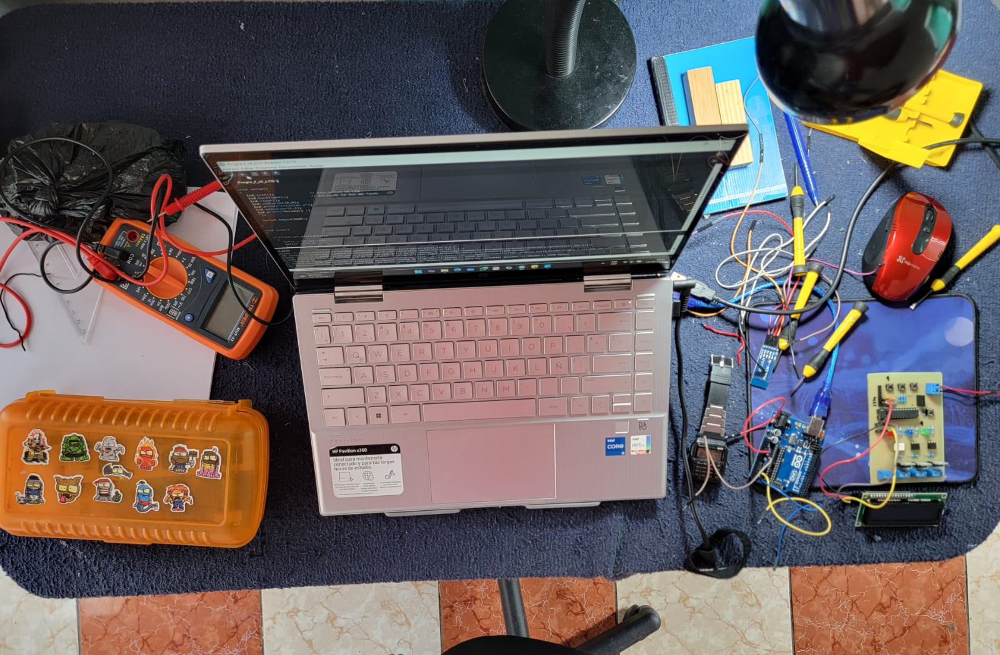

Descripción: Esta es una foto de mi inicio en la carrera, empezando desde lo más básico que son los conceptos y medición de semiconductores, una bonita experiencia que marcó el inicio de mi pasión por la tecnología.

Descripción: Para esta foto ya había entrado en la etapa media de mi carrera que era la programación de microcontroladores y electrónica digital y analógica, para este caso tuvimos que realizar un reloj de 24 horas.

Descripción: Esta es una foto de mi preparación para una de las etapas finales de la carrera, donde tenía que practicar la programación de microcontroladores y programación de PLC, simulando un caso real en la industria.
Descripción: Breve video de la etapa final de la carrera, donde tuve que realizar mi evaluación de certificación, simulando un caso real y un problema de una empresa, afortunadamente aprobé la certificación con éxito.